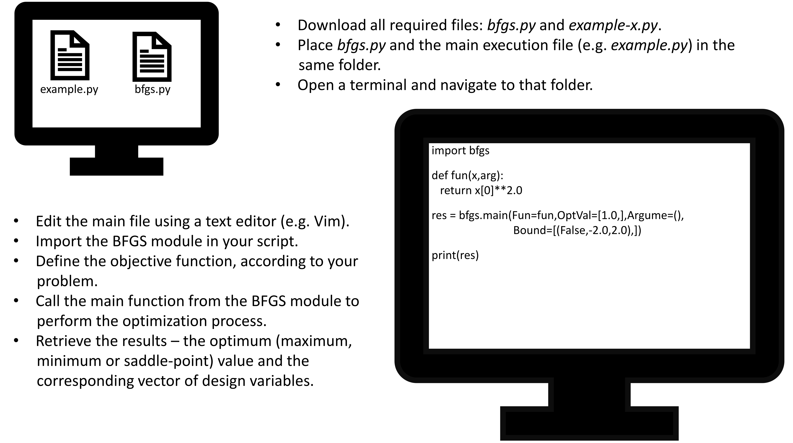

The optimization of nonlinear functions is a cornerstone of numerical analysis and applied mathematics, aiming to determine the optimal solution of a given objective function. Gradient-based methods utilize derivative information to effectively guide the search process, offering a systematic and reliable framework for addressing complex optimization problems. Such approaches have wide-ranging applications across disciplines including engineering, economics, machine learning, and industrial optimization.
Within this framework, the BFGS algorithm (Broyden–Fletcher–Goldfarb–Shanno), developed in the 1970s, is widely regarded as one of the most efficient and reliable methods for unconstrained nonlinear optimization. It combines fast superlinear convergence with moderate computational cost, ensuring stable numerical performance and making it a reference technique for practical and research-oriented applications alike.
The purpose of this manual is to provide a concise and well-structured presentation of the theoretical foundations of the BFGS method, while also guiding the reader in the practical use of the corresponding computational module developed within the Opt4Deck platform. Through illustrative examples and step-by-step analysis, the manual delivers both the theoretical background and a robust methodology for solving applied nonlinear optimization problems.
2. Theory of Gradient-based Optimization
This section introduces the fundamental concepts underlying gradient-based optimization methods. It begins by presenting the classical theoretical foundations — such as Newton’s method and the role of Hessian information — and then discusses how these ideas evolved into more efficient schemes including quasi-Newton algorithms and, in particular, the BFGS method. The purpose of the chapter is to provide a clear and structured overview of how gradient and curvature information can be leveraged to design effective iterative search strategies and achieve rapid convergence in nonlinear optimization problems.
2.1. Newton's Method
Stationary points of a mathematical function.
Newton’s method is one of the foundational techniques in nonlinear optimization. Its strength lies in the use of second-order information — specifically the Hessian matrix — allowing it to achieve fast and often quadratic convergence toward stationary points of the objective function.
Consider a differentiable function \(f(x)\) with \(x \in \mathbb{R}^n\). The method is based on the second-order Taylor expansion about the current iterate \(x_k\):
where \(\nabla f(x_k)\) is the gradient vector and \(H(x_k)\) the Hessian matrix.
Minimizing this quadratic model with respect to \(x\) yields the classical Newton update:
\(x_{k+1} = x_k - H(x_k)^{-1} \nabla f(x_k)\)
When the initial point is sufficiently close to the optimum and the Hessian is positive definite (for minimization problems), Newton’s method exhibits quadratic convergence, making it extremely efficient. For this reason, it is often regarded as the prototype for second-order optimization techniques. In practice, however, the method faces two significant challenges: first, the computational cost of evaluating and inverting the Hessian, especially in large-scale problems and second, the possible indefiniteness of the Hessian, which may result in inappropriate or unstable search directions. These limitations motivated the development of quasi-Newton methods, which maintain the favorable convergence properties of Newton’s method while avoiding the explicit computation or inversion of the Hessian by employing iterative approximation schemes.
2.2. Hessian Approximation
Computing and inverting the Hessian matrix explicitly can be computationally demanding in large-scale optimization problems. Moreover, the Hessian may not always be positive definite, potentially leading to unstable or incorrect search directions. These challenges motivated the development of quasi-Newton methods, which retain the benefits of second-order information while avoiding direct evaluation of the Hessian.
Quasi-Newton algorithms construct an iterative approximation of the Hessian (or its inverse) by exploiting the observed change in gradient between successive iterations. The key quantities are:
\(s_k = x_{k+1} - x_k\): the step vector,
\(y_k = \nabla f(x_{k+1}) - \nabla f(x_k)\): the change in the gradient.
These satisfy the fundamental secant condition:
\(H_{k+1}s_k = y_k\)
ensuring that the updated approximation incorporates the local curvature information encoded in the gradient variation.
On this foundation, several update formulas have been developed:
DFP (Davidon–Fletcher–Powell): one of the earliest quasi-Newton methods, updating the inverse Hessian. Although elegant, it is generally considered less robust than BFGS.
BFGS (Broyden–Fletcher–Goldfarb–Shanno): the most widely used and reliable quasi-Newton scheme, preserving positive definiteness under standard curvature conditions and exhibiting stable convergence behavior.
SR1 (Symmetric Rank-One update): a simpler update that can, in some cases, provide more accurate curvature estimates, though without guaranteeing positive definiteness.
These approaches offer powerful and efficient tools for solving challenging optimization problems while avoiding the computational burdens associated with full second-order methods.
2.3. The BFGS Algorithm
The BFGS algorithm is one of the most powerful and widely adopted quasi-Newton methods. Its core principle is that the Hessian matrix is not computed explicitly; instead, it is approximated iteratively using information extracted solely from successive gradient evaluations.
The algorithm proceeds through the following steps:
Initialization
Given an initial point \(x_0 \in \mathbb{R}^n\), the initial Hessian approximation is typically set to \(H_0 = I\), i.e. the identity matrix.
Search direction
At iteration \(k\), the search direction is computed as: \(p_k = -H_k^{-1} \nabla f(x_k)\), which constitutes a descent direction due to the positive definiteness of \(H_k\).
Variable update
The new iterate is obtained as: \(x_{k+1} = x_k + \alpha_k p_k\), where \(\alpha_k > 0\) is a step length selected to satisfy sufficient decrease criteria (e.g., Wolfe conditions) in classical implementations.
Hessian update
With \(s_k\) and \(y_k\) as previously defined, the Hessian approximation is updated according to the BFGS formula: \(H_{k+1} = H_k - \frac{H_k s_k s_k^T H_k}{s_k^T H_k s_k} + \frac{y_k y_k^T}{y_k^T s_k}\). This update ensures that it: (i) preserves symmetry, (ii) guarantees positive definiteness when \(y_k^Ts_k > 0\) and (iii) yields stable and reliable search directions.
Termination criterion
The iterative process continues until: \(\vert f(x_{k+1})-f(x_k) \vert \le \epsilon\) or \(\Vert \nabla f(x_k) \Vert \le \epsilon \), with \(\epsilon\) denoting the prescribed tolerance.
Through this iterative structure, the BFGS algorithm achieves superlinear convergence to local optima without requiring explicit computation of second derivatives.
The implementation of the BFGS method in bfgs.py remains faithful to the classical algorithm while incorporating several practical refinements that improve its robustness and usability in real-world applications.
Numerical derivative estimation (finite differences):
Gradients are computed using finite differences, allowing the solver to be applied to functions without analytical derivatives. This makes the implementation suitable for black-box models, simulations, or problems where symbolic differentiation is impractical.
Diagonal initialization of the Hessian
Rather than starting from the identity matrix, the initial Hessian is estimated numerically along the diagonal, providing a more representative early curvature approximation. This often leads to smoother early iterations and may accelerate convergence.
Boundary handling via reflection
When a variable exceeds its allowable bounds, it is symmetrically reflected back into the feasible interval rather than simply clamped. This avoids stagnation at the boundaries and preserves the continuity of the search trajectory.
Fixed step length
For simplicity and ease of use, the implementation employs a constant unit step (\(\alpha_k=1\)) at each iteration, rather than performing a line-search. This choice eliminates the overhead associated with step-length selection while still providing reliable performance for a wide range of smooth optimization problems. Although not required by the theoretical BFGS framework, this simplification makes the solver more accessible and easier to integrate into general-purpose workflows.
Practical convergence criterion
Convergence is assessed based on the change in the objective function between successive iterations. Although simpler than gradient-based criteria, it offers reliable termination behavior, particularly in engineering or industry-oriented problems.
These approaches strengthen the solver's practical performance while maintaining the theoretical structure of the BFGS method.
2.4. Boundary Conditions
In many optimization problems, the design variables are subject to bound constraints and must remain within predefined intervals. Such bounds often arise from physical, geometric, or operational considerations and define the feasible search domain. Properly incorporating these limits into the algorithm is crucial for both realistic modeling and numerical stability.
The implementation adopts a reflection-based strategy. At each iteration, if a variable update exceeds the lower or upper bound, the value is not simply clamped to the boundary. Instead, it is reflected symmetrically back into the allowable interval. In this way, the variable remains feasible while the search direction is preserved.
This mechanism offers several advantages:
Prevention of boundary stagnation: Reflection avoids the common issue where variables become trapped at their bounds, thus maintaining exploration of the design space.
Preservation of curvature information: The optimization step derived from the Hessian approximation is smoothly adapted rather than abruptly truncated, helping maintain stability and consistency.
Numerical stability: Restricting the search to a finite domain reduces the risk of divergence or erratic behavior during the iterative process.
Simplicity and efficiency: The approach is computationally lightweight and straightforward to implement, making it well suited for practical solvers.
Overall, the explicit incorporation of variable bounds combined with the reflection mechanism enhances the robustness and practical applicability of the BFGS algorithm, particularly in real-world optimization tasks involving naturally bounded design spaces.
3. Step-by-step Example
The following numerical example illustrates the application of the BFGS method to a simple yet representative nonlinear optimization problem (here presented as a maximization task). This section aims to demonstrate, in a transparent and well-structured manner, how each stage of the algorithm is carried out — from the formulation of the problem and the initialization step, to the Hessian updates and the final convergence. Through this worked example, the reader gains a practical understanding of the algorithm’s mechanics and of the interpretation of intermediate and final results.
3.1. Problem Formulation
In this example, we consider the maximization of a simple two-variable nonlinear function. The objective function is:
\(max: f(x,y) = 10-x^2-y^2\)
This function represents a downward-opening quadratic paraboloid with a unique maximum at \((x^∗,y^∗)=(0,0)\). It provides a clear and illustrative test case for demonstrating the BFGS method, as its curvature is constant and easily characterized, and the convergence path can be clearly tracked.
The following subsections describe each step of the method in detail — from the initialization phase and the determination of the search direction to the Hessian update and the convergence assessment.
3.2. Step-1: Initialization
The first stage of the procedure consists of selecting the initial point from which the algorithm will begin its search. In this example, we set the initial vector to: \(x_0=[1,1]^T\). At this point, the gradient vector and the Hessian matrix of the objective function are evaluated:
These two quantities — the gradient and the Hessian — provide the information required to compute the initial search direction used by the BFGS algorithm.
3.3. Step-2: Search New-point
In this step, the search direction is applied to compute the next point of the iterative process. For the present example, the step length is chosen as \( \alpha_0 = 1\). Using this step length together with the gradient at the initial point, the updated point is obtained as:
Since the gradient is zero at this point, the optimal point has been reached, and no further updates of the Hessian approximation are required.
In the general case, when the gradient is nonzero, the BFGS method proceeds with the update of the Hessian approximation. This requires computing the displacement vector \(s_0 = x_1-x_0\) and the gradient difference \(y_0 = \nabla f(x_1,y_1)- \nabla f(x_0,y_0)\). Using these quantities, the recursive BFGS formula — introduced earlier in the theoretical section — is applied to obtain the updated matrix \(H_1\), which is then used in the subsequent iteration.
3.5. Discussion
This example illustrated the BFGS procedure in a step-by-step manner, showing how the method progresses from the initial point to the optimal solution. Beginning from a point away from the maximum, the algorithm identified a valid search direction and converged to the exact optimum at \((0,0)\), achieving an objective value of \(f(0,0) = 10\). The rapid convergence — requiring only a minimal number of iterations (in this case, a single iteration) — is a direct consequence of the quadratic structure of the objective function and the constant Hessian. This behavior underscores an essential theoretical property of Newton’s method and its variants: in quadratic problems, they recover the curvature information exactly, enabling immediate convergence to the optimal solution without the need for extended iterative refinement.
4. Overview and Usage
This section provides an overview of the organization and practical use of the BFGS solver. The file bfgs.py offers a ready-to-use implementation for solving nonlinear programming problems using the BFGS method. Its use is straightforward and primarily consists of preparing the input data and executing a single function call that returns the optimal value and the corresponding variable vector. The user only needs to define the required input parameters correctly and call the appropriate function. The entire procedure is executed automatically, and each step of the computation is recorded in a log file for reference and verification.
4.1. Inputs - What the user must provide
The user must supply a set of mandatory and optional parameters, each of which determines how the solver initializes and executes the optimization procedure.
Objective function: a user-defined Python function, e.g. fun(x,arg), clearly separating the design variables from any auxiliary parameters. (mandatory)
Initial variable values: a list specifying the starting point for the optimization variables. (mandatory)
Variable bounds: for each variable, the admissible interval must be provided together with a Boolean flag indicating whether the bounds must be enforced during the iterations. (mandatory)
Convergence tolerance: specifies the required termination accuracy. (optional)
Maximum number of iterations: sets the upper limit on the number of iterations executed by the solver. (optional)
An example, as implemented in bfgs.py, is shown below:
def fun(x,arg):
return arg[0]-x[0]**2.0-x[1]**2.0
In this example, the objective \(f(x,y) = 10-x^2-y^2\) is expressed as a Python function that receives the design variables x and a list of auxiliary parameters arg.
4.2. Module Call
The entire optimization procedure is executed with a single command:
import bfgs
res = bfgs.main(Fun=fun,OptVal=[1.0,1.0],Argume=[10.0,],Bound=[(False,-2.0,2.0),(False,-2.0,2.0)],Conver=0.00001,Max_iter=50)
The function bfgs.main() applies the BFGS algorithm to the provided inputs and returns the final optimal solution. All intermediate computations, Hessian updates, and iterative steps are handled automatically by the solver, without requiring additional user intervention.
4.3. Outputs - what is returned
The output res is returned as a two-element tuple containing:
the optimal value of the objective function (e.g., 10.0), and
the design-variable vector corresponding to the optimal solution (e.g., [0.0,0.0]).
Following the example shown earlier, the results can be printed as:
>>print(res)
10.0, [0.0,0.0]
This output format provides direct access both to the numerical value of the optimum and to the corresponding vector of design variables.
4.4. Notes and Execution
Additional remarks:
Understanding the internal mechanics of the algorithm is not required for basic use.
Proper formatting of the input and correct interpretation of the output are sufficient for effective application.
The files example1.py, example2.py and example3.py provide three complete usage examples and may serve as templates.
The current implementation supports both minimization and maximization problems without constraints.
An illustrative workflow diagram follows, presenting the step-by-step execution of a specific example using the bfgs.main() function.

Illustration of the execution flow of the BFGS method, as implemented in Opt4Deck.
5. Remarks and Considerations
A robust implementation of the BFGS method for nonlinear programming — supporting both minimization and maximization tasks — is provided through the accompanying module. The algorithm has been designed with emphasis on usability, clarity of structure, and computational efficiency, enabling the solution of a broad range of practical problems. It offers a dependable framework for applied optimization and serves as a flexible foundation for further extensions and research-oriented developments.
5.1. Capabilities and Assumptions
The current implementation of the solver relies on the following capabilities and underlying assumptions:
It may converge to a local minimum, maximum, or saddle point, depending on the landscape of the objective function and the chosen initial guess.
It allows the definition of variable bounds and enforces them during the iterations through a reflection-based boundary-handling mechanism.
All input data must strictly follow the structure and format specified in this manual.
It returns both the optimal value of the objective function and the corresponding set of design (decision) variable values.
These capabilities make the solver suitable for a wide range of engineering and mathematical optimization problems, including cases where analytical derivatives are unavailable.
5.2. Possible Extensions
Potential future enhancements and extensions may include:
Automatic step-length selection using line-search procedures (e.g., Wolfe or Armijo conditions), replacing the current fixed step size with a more robust and theoretically grounded mechanism.
Automatic handling of equality and inequality constraints, potentially through penalty-based or projection methods, thereby extending the solver’s applicability to constrained optimization problems.
Enhanced input validation and more informative error reporting, improving robustness and facilitating a smoother user experience.
Development of a graphical user interface (GUI) to increase accessibility, streamline user workflows, and enable richer visualization of results.
Such extensions would further strengthen the solver’s practical utility and make it an even more versatile tool for both research-oriented and industrial applications.
5.3. Collaboration and Development
This project is developed under the Opt4Deck initiative, which hosts open-source optimization tools. The platform is open to contributions, enhancements, and collaborative development efforts aimed at extending functionality, improving computational performance, and broadening the applicability of its algorithms.
6. Conclusions
This manual has presented the BFGS method for solving nonlinear programming problems. Through a theoretical introduction, a detailed step-by-step numerical example, and a practical Python implementation, it has demonstrated how the algorithm can be applied directly to compute optimal solutions in a structured and reproducible manner.
The reader has been guided through:
An understanding of the key concepts and numerical procedure underlying the method.
A fully developed example with detailed, step-by-step analysis.
The practical application of the algorithm using a ready-to-use and well-structured Python implementation.
The accompanying module, bfgs.py, provides a comprehensive and reliable computational tool suitable for practical use, testing, and data evaluation, without requiring specialized libraries or complicated configuration. It is accompanied by illustrative examples and execution logs to ensure transparency, traceability, and reproducibility.
The BFGS method remains a central technique in design optimization and engineering practice. This material aims to support its practical application by professionals, researchers, and students, offering a stable, flexible, and extensible foundation for nonlinear optimization tasks. Future extensions are expected to further enhance its functionality and expand its scope of application.